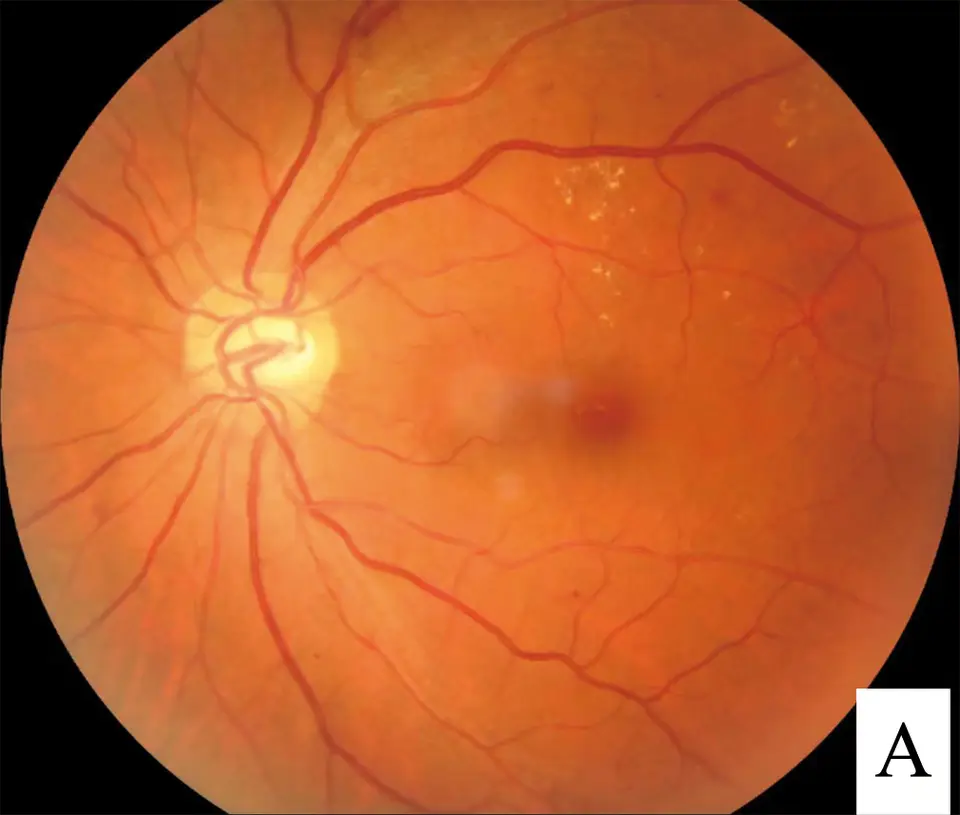

DX.1 — Diabète sucré (hyperglycémie)
1. Définition
Le diabète sucré est un groupe de maladies métaboliques définies par une hyperglycémie chroniqueGlycémie durablement au-dessus de la norme : seuils au point 8.. Cette hyperglycémie vient d'un défaut de sécrétion ou d'action de l'insuline (CIM-10, ADA 2025)La CIM-10 (OMS) classe le diabète en E10–E142. L'ADA 2025 distingue le type 1, le type 2, le diabète gestationnel et les types spécifiques.2. Il cause la soif excessive par diurèse osmotiqueLe glucose non réabsorbé entraîne l'eau dans l'urine : polyurie, déshydratation, puis soif..
2. Épidémiologie (Suisse, puis Europe)
L'âge et l'excès pondéral augmentent le risque de diabète. En Suisse, 6,2 % des personnes de 15 ans et plus déclarent un diabète ou un traitement antidiabétique (enquête suisse sur la santé, OFS 2022, relevée par l'Obsan).1
| Élément | Contenu |
|---|---|
| Distribution | Le type 2 représente la grande majorité des cas ; le type 1 débute surtout chez l'enfant et l'adulte jeune.2 |
| Groupes à risque | Excès pondéral, sédentarité, âge croissant, antécédent familial, diabète gestationnel antérieur, glucocorticoïdes.2,3 |
| Gravité et mortalité | La mortalité hospitalière de l'acidocétose est de 0,20 % dans le type 1 et de 1,04 % dans le type 2. Celle de l'état hyperosmolaire du type 2 a diminué entre 2008 et 201824. Ces deux crises sont les urgences hyperglycémiques.4 |
| Enjeux | Complications microvasculaires et cardiovasculaires, charge de soins chronique, dépistage des formes silencieuses. |
3. Physiopathologie
L'insuline fait entrer le glucose dans le muscle et le tissu adipeux et freine la production hépatique de glucose. Quand l'insuline agit insuffisamment, le glucose s'accumule dans le sang.
Cascade de la cause au signe
- Amorce (niveau moléculaire et cellulaire). Dans le type 1, une attaque auto-immune détruit les cellules bêta24. Dans le type 2, l'excès de graisse viscérale entraîne une résistance des tissus à l'insuline24.
- Développement. Le pancréas compense d'abord par plus d'insuline. Les cellules bêta s'épuisent ensuite et la sécrétion baisse.
- Installation (niveau tissulaire). Le foie produit trop de glucose, le muscle en capte trop peu. La glycémie dépasse le seuil rénalEnviron 10 mmol/L : au-delà, les reins ne réabsorbent plus tout le glucose filtré., et le glucose passe dans l'urine24.
- Maintien (niveau clinique). La glucosurie entraîne l'eau : polyurie, déshydratation, hyperosmolarité plasmatique, puis soif. La glucotoxicitéUne glycémie élevée altère elle-même la sécrétion et l'action de l'insuline, ce qui entretient la maladie. aggrave le cercle.
- Carence insulinique sévère. La lipolyse libère des acides gras que le foie transforme en corps cétoniques : acidocétose. Si un peu d'insuline persiste, la cétose manque et l'hyperosmolarité domine.
Ces mécanismes expliquent les complications. La déshydratation mène au choc et à l'insuffisance rénale aiguë. L'hyperglycémie chronique provoque des lésions des petits vaisseaux (œil, rein, nerfs) et accélère l'athérosclérose.
| Lésion ou perturbation | Exploration qui la montre | Thérapeutique et mécanisme |
|---|---|---|
| Carence de sécrétion d'insuline | C-peptide bas, auto-anticorps, cétose | Insuline Lantus® et NovoRapid® : remplace l'hormone manquante. |
| Insulinorésistance, excès de glucose hépatique | Glycémie à jeun, HbA1c, IMC | Mode de vie ; Glucophage® : freine la production hépatique de glucose et améliore la sensibilité à l'insuline. |
| Glucose filtré non réabsorbé | Glycosurie à la bandelette | Inhibiteur du SGLT2 (Jardiance®) : augmente l'élimination urinaire du glucose. |
| Sécrétion post-prandiale insuffisante, appétit élevé | Glycémie post-prandiale, poids | Agoniste du GLP-1 (Ozempic®) : stimule l'insuline selon la glycémie, freine le glucagon et l'appétit. |
| Production de corps cétoniques | Cétonémie, pH, bicarbonates | Insuline IV et réhydratation : stoppent la lipolyse et corrigent l'acidose. |
| Déshydratation hyperosmolaire | Osmolalité, natrémie corrigée, urée, créatinine | Cristalloïde isotonique : restaure le volume ; l'insuline vient après. |
4. Démarche diagnostique
Le titre est le diabète sucré en cause d'une soif excessive. La démarche exclut d'abord une crise hyperglycémique, puis confirme l'hyperglycémie, puis classe le type.
Étape 1 : chercher les drapeaux rouges (cliquer pour comprendre)
- Vomissements, douleurs abdominalesL'acidocétose les provoque ; ils empêchent aussi la boisson et aggravent la déshydratation. Piège : on évoque à tort une gastro-entérite.
- Respiration ample et rapide (Kussmaul)Elle compense une acidose métabolique sévère et évoque l'acidocétose.
- Haleine d'acétoneOdeur de pomme ou de vernis : acétone exhalée, signe de cétose.
- Confusion, somnolence, comaElle reflète une hyperosmolarité ou une acidose sévère, car la mortalité est élevée : c'est une urgence vitale.
- Hypotension, tachycardie, pli cutanéHypovolémie avec choc imminent : la réhydratation est la première urgence.
- Glycémie très élevéeUne hyperglycémie majeure avec confusion fait évoquer l'état hyperosmolaire, surtout chez le sujet âgé (seuil chiffré au point 8).
- Facteur déclenchant graveInfection, infarctus, accident vasculaire cérébral, arrêt d'insuline : il faut le traiter en même temps.
- Grossesse, enfant, inhibiteur du SGLT2Risque d'acidocétose avec glycémie parfois modérée ; contrôler les cétones même si la glycémie est peu élevée.
Étape 2 : si aucun drapeau rouge
- On mesure la glycémie capillaire et on cherche les cétones.
- On confirme l'hyperglycémie en laboratoire (point 8).
- On recherche le type d'après l'âge, le poids, la vitesse d'installation et la cétose.
- On cherche les complications et les comorbidités (point 9).
- On écarte les autres causes de soif : diabète insipide, polydipsie primaire et hypercalcémie.
| Diagnostic | Signe ou examen qui tranche | Piège |
|---|---|---|
| Acidocétose | Cétonémie élevée, pH bas, bicarbonates bas | Glycémie parfois modérée sous inhibiteur du SGLT22 |
| État hyperosmolaire | Glycémie très haute, osmolalité élevée, sans cétose franche | Confusion attribuée à l'âge4 |
| Diabète insipide | Glycémie normale, urines diluées | Soif et polyurie identiques |
| Hypercalcémie | Calcémie élevée | Polyurie par défaut de concentration |
5. Anamnèse ciblée et drapeaux rouges
Pour le diabète sucré, l'interrogatoire suit les questions clés de l'anamnèse, chacune avec sa raison physiopathologique.
Les drapeaux rouges du diabète sucré et leur conduite immédiate s'ouvrent dans la fenêtre drapeaux rouges, signification et action immédiate.
Drapeaux rouges actionnables. Vomissements, respiration ample ou confusion imposent une glycémie, des cétones et un transfert immédiat aux urgences. Ainsi, une glycémie très élevée impose un bilan hospitalier. Un enfant ou une femme enceinte symptomatique est adressé le jour même, avec avis spécialisé en diabétologie.
6. Examen physique ciblé, région par région
L'examen ciblé recherche d'abord : général, hémodynamique et bouche et peau. Il recherche enfin : respiration et haleine, abdomen, pieds et yeux. Chaque fenêtre décrit le signe, la technique et l'aspect.
7. Approche syndromique
Chaque syndrome figure dans sa fenêtre, avec ses signes et leur mécanisme : syndrome polyuro-polydipsique hyperglycémique, syndrome d'acidocétose, syndrome hyperosmolaire et syndrome de complications chroniques.
8. Diagnostic positif et critères
Les critères de l'ADA 2025 posent le diagnostic2. Il faut un résultat anormal confirmé par un second test, sauf s'il existe des symptômes avec une glycémie aléatoire élevée.2
| Test | Seuil | Remarque |
|---|---|---|
| Glycémie à jeun (8 heures sans apport calorique) | 7,0 mmol/L ou plus (126 mg/dL) | Répéter si aucun symptôme. |
| Glycémie 2 heures après 75 g de glucose (HGPO) | 11,1 mmol/L ou plus (200 mg/dL) | Test long ; utile en cas de doute. |
| HbA1c | 6,5 % ou plus | Méthode certifiée ; non fiable en cas d'anémie ou d'hémoglobinopathie. |
| Glycémie aléatoire avec symptômes classiques | 11,1 mmol/L ou plus | Suffit seule : soif, polyurie, perte de poids2. |
Ne suffit pas : une glycosurie isolée, une glycémie à jeun entre 5,6 et 6,9 mmol/L (prédiabète) ou une HbA1c inférieure à 6,5 %2. Une valeur isolée sans symptôme se confirme sur un second échantillon.2
Le détail figure dans la fenêtre crises hyperglycémiques : critères du consensus.
Les trois critères de l'acidocétose doivent tous être présents. L'acidocétose peut être euglycémique (glycémie < 11,1 mmol/L) ; un inhibiteur du SGLT2 en est une cause connue.4
9. Examens complémentaires
9.a Gold standard
Le gold standard est biologique : la glycémie plasmatique veineuse à jeun, la glycémie 2 heures après 75 g de glucose ou l'HbA1c2. Ces trois tests permettent ainsi de confirmer le diagnostic de manière biologique.2
9.b Première intention
Le bilan comprend d'abord : glycémie capillaire, glycémie plasmatique veineuse à jeun et HbA1c2. Il comprend enfin : cétonémie capillaire (BHB), gaz du sang veineux, ionogramme, créatinine, urée et bandelette urinaire. Chaque fenêtre précise valeurs, interprétation et pièges.
On prescrit une glycémie veineuse à jeun de 8 heures, HbA1c sans préparation, des cétones capillaires, un gaz du sang, un ionogramme et la créatinine2. Les valeurs de référence dépendent du laboratoire exécutant. Si les valeurs divergent, répéter le test.2
9.c Alternatives
En l'absence d'HbA1c fiable (anémie, hémoglobinopathie, grossesse), on utilise la glycémie. En grossesse, la HGPO à 75 g reste le test de référence du diabète gestationnel2. En cas de DFGe inférieur à 30 mL/min/1,73 m², l'HbA1c et la glycémie restent utilisables2. La metformine est alors contre-indiquée, et un produit de contraste iodé impose d'interrompre la metformine 48 h avant l'examen si le DFGe est inférieur à 60 mL/min/1,73 m².6
9.d Deuxième intention
Le bilan de seconde ligne comprend : auto-anticorps contre la GAD, C-peptide, microalbuminurie, créatinine et fond d'œil. Il comprend enfin : bilan lipidique, ASAT/ALAT, ECG et CRP, ECBU, radiographie.
Cliché de référence : fond d'œil
La fenêtre fond d'œil dans le diabète sucré montre l'image interprétée en regard de son cliché brut.
10. Arbre décisionnel
| Si | → Alors |
|---|---|
| Vomissements, Kussmaul, confusion ou glycémie très élevée | Cétones, gaz du sang, ionogramme ; hospitalisation ; réhydrater puis insuline IV |
| Cétones ≥ 3,0 mmol/L avec pH < 7,30 ou bicarbonates < 18 mmol/L | Acidocétose : filière d'urgence |
| Glycémie très élevée, cétose faible, osmolalité élevée | État hyperosmolaire : réhydratation prolongée |
| Pas de crise, glycémie ≥ 11,1 avec symptômes | Diabète confirmé ; classer le type |
| Glycémie ou HbA1c limite sans symptôme | Répéter le test ; si discordance, refaire le test anormal |
| Soif sans hyperglycémie | Diabète insipide, polydipsie primaire, hypercalcémie, insuffisance rénale |
| Type 1 confirmé | Insuline basale-bolus immédiate |
| Type 2 stable | Mode de vie et metformine, puis ajout selon le risque cardiorénal |
Lecture rapide. Des signes de crise imposent de doser les cétones et les gaz du sang. Des cétones élevées imposent l'hospitalisation. Une glycémie normale conduit à chercher une autre cause de soif. Un diabète confirmé conduit à classer le type.
11. Prise en charge selon les recommandations suisses
La prise en charge suit le consensus ADA/EASD 2022, sa mise à jour 2026 et les AIPS suisses.3,5
11.A But thérapeutique
Le but est de supprimer les symptômes, d'éviter l'acidocétose et l'hypoglycémie, puis de prévenir les complications. La cible d'HbA1c est individualisée ; le consensus ADA/EASD retient environ 7 % pour la plupart des adultes3. On réévalue la valeur individuelle à chaque suivi (fréquence au point 11.C).
11.B Moyens
A. Urgence chronologique : acidocétose ou état hyperosmolaire
Urgence — conduite chronologique
- On appelle le service d'urgence et on contrôle les voies aériennes et la conscience.
- On pose deux voies veineuses et on prélève la glycémie, les cétones, les gaz, l'ionogramme et la créatinine.
- On réhydrate par un cristalloïde isotonique ou équilibré, à raison de 500 à 1000 mL par heure pendant les 2 à 4 premières heures.4
- On dose la kaliémie. Si elle est inférieure à 3,5 mmol/L, on apporte du potassium et on retarde l'insuline4.
- Une fois la kaliémie connue et supérieure ou égale à 3,5 mmol/L, on administre l'insuline rapide NovoRapid® par perfusion IV continue410. La dose est de 0,1 U/kg/h dans l'acidocétose selon le consensus4. Dans l'état hyperosmolaire, l'insuline se débute lorsque la glycémie ne baisse plus sous la seule réhydratation, à 0,05 U/kg/h4. La glycémie capillaire se mesure toutes les 1 à 2 heures.4
- On cherche et on traite le facteur déclenchant : infection, infarctus ou arrêt d'insuline.
- On passe à l'insuline sous-cutanée lorsque la crise est résolue et que le patient s'alimente, et on chevauche l'insuline basale Lantus®, car la Lantus® n'est pas l'insuline de choix de l'acidocétose.9
Hypoglycémie sous insuline
Urgence — hypoglycémie, conduite chronologique
- Une hypoglycémie modérée se traite par du glucose ou un aliment sucré, pris par voie orale.
- Lors d'une hypoglycémie sévère avec perte de connaissance, une personne expérimentée administre 1 mg de glucagon par voie intramusculaire ou sous-cutanée31489. L'enfant de moins de 25 kg ou de moins de 6 à 8 ans reçoit 0,5 mg431489.
- Un médecin peut aussi injecter du glucose par voie intraveineuse.
- Si le patient ne réagit pas dans les 10 minutes qui suivent l'injection de glucagon, on injecte du glucose par voie intraveineuse31489.
- Dès que le patient a repris connaissance, on lui administre des hydrates de carbone afin de prévenir une rechute.
B. Hors urgence : ordre du traitement
- Mesures générales. Éducation thérapeutique, autosurveillance, arrêt du tabac, alimentation et activité physique : elles diminuent la résistance à l'insuline.
- Pharmacologique, type 2. On débute par Glucophage® et on ajoute Jardiance® ou Ozempic® si une maladie cardiovasculaire, une maladie rénale ou un excès pondéral existe.3,5
- Pharmacologique, type 1. On associe l'insuline basale Lantus® à un bolus de NovoRapid® au repas.109
- Non pharmacologique. On propose une perte de poids, une activité aérobie de 150 minutes par semaine et, selon l'IMC, une chirurgie bariatrique.5
| Spécialité (DCI, n° Swissmedic) | Dose AIPS | Voie et durée | Contre-indication majeure |
|---|---|---|---|
| Glucophage® (metformine, 26061) | Départ 500 à 1000 mg par jour, puis +500 mg tous les 5 à 7 jours ; entretien 1500 à 2000 mg ; maximum 3000 mg6 | Orale, en 2 à 3 prises pendant ou après les repas ; au long cours, dose adaptée à la glycémie et à l'HbA1c6 | DFGe < 30 mL/min/1,73 m², acidose métabolique dont acidocétose, coma ou précoma diabétique6 |
| Jardiance® (empagliflozine, 63227) | 10 mg une fois par jour ; 25 mg si le besoin glycémique l'exige7 | Orale, au long cours ; effet glycémique réduit si DFGe < 457 | Hypersensibilité ; ne s'emploie pas dans le diabète de type 17 |
| Ozempic® (sémaglutide, 66604) | 0,25 mg par semaine pendant 4 semaines, puis 0,5 mg ; 1 mg puis 2 mg après au moins 4 semaines à chaque palier8 | Une fois par semaine, au long cours ; arrêt au moins 2 mois avant un projet de grossesse8 | Hypersensibilité ; ne s'emploie ni dans le diabète de type 1 ni dans l'acidocétose8 |
| Lantus® (insuline glargine, 55346) | Une injection par jour au même moment ; en basal-bolus, 40 à 60 % de la dose journalière9 | Sous-cutanée, au long cours ; chez l'enfant dès 2 ans, le soir9 | Hypersensibilité ; insuline non adaptée à l'acidocétose9 |
| NovoRapid® (insuline aspart, 55045) | Besoin habituel de 0,5 à 1,0 U/kg par jour ; en basal-bolus, 50 à 70 % de ce besoin10 | Sous-cutanée ; voie intraveineuse réservée au professionnel, avec surveillance de la glycémie et de la kaliémie10 | Hypersensibilité ; risque d'hypoglycémie à chaque dose10 |
Le détail figure dans la fenêtre points de sécurité AIPS.
La fenêtre interactions majeures et conduite (AIPS) contient les données à retenir.
Situations spéciales
La fenêtre situations spéciales (textes AIPS) précise ce point.
Aspects sociaux et professionnels
L'assurance maladie (LAMal) prend en charge le traitement et le matériel selon les listes officielles. Un arrêt de travail est prescrit pendant la crise ou l'équilibration. L'assurance-invalidité (LAI) intervient en cas d'incapacité durable ; l'assurance-accidents (LAA) ne s'applique que si un accident est en cause.
11.C Surveillance
La fenêtre surveillance rassemble le détail utile.
11.D Pronostic et sortie
L'acidocétose est résolue lorsque la cétonémie est inférieure à 0,6 mmol/L et que le pH atteint 7,30 ou les bicarbonates 18 mmol/L.4
Le patient sort lorsque tous les critères suivants sont réunis.
- L'alimentation est reprise.
- Les vomissements sont arrêtés.
- L'acidose est corrigée.
- L'insuline sous-cutanée est en place.
- Un plan écrit de la maladie intercurrente est remis au patient.
Le type 2 peut entrer en rémission après une perte de poids importante, alors que le type 1 ne guérit pas45. En recherche, le consensus 2026 recommande de proposer plus tôt un inhibiteur du SGLT2 ou un agoniste du GLP-1 pour protéger les organes.5
12. Prévention
| Niveau | Gestes | Cible |
|---|---|---|
| Primaire | Perte de poids, activité physique, alimentation équilibrée, arrêt du tabac3 | Personnes à risque : IMC élevé, antécédent familial, diabète gestationnel |
| Secondaire | Dépistage par glycémie ou HbA1c chez les personnes à risque2 ; dépistage des complications : yeux, reins, pieds | Diabète connu ou prédiabète |
| Tertiaire | Éducation thérapeutique, cible d'HbA1c, soins des pieds, contrôle de la pression artérielle et des lipides | Complications établies |
La vaccination contre la grippe est recommandée pour les personnes diabétiques par l'OFSP. Le lien avec l'épidémiologie suisse (6,2 %) justifie le dépistage ciblé.1
13. Points clés
Devant une soif excessive, la glycémie capillaire est le premier geste.
Le diagnostic repose sur une glycémie à jeun de 7,0 mmol/L ou plus, ou une HbA1c de 6,5 % ou plus1.
Vomissements, respiration de Kussmaul ou confusion imposent la recherche de cétones et l'hospitalisation.
La réhydratation débute d'emblée, et la kaliémie se mesure avant l'insuline, qui se retarde si elle est inférieure à 3,5 mmol/L1.
La metformine est contre-indiquée si le DFGe est inférieur à 30 mL/min/1,73 m²1.
Sous inhibiteur du SGLT2, une acidocétose est possible avec une glycémie modérée.
14. Pièges et questions fréquentes à l'examen fédéral suisse
Question. Une glycémie aléatoire de 12 mmol/L avec soif et polyurie suffit-elle ? Réponse. Oui2. Un seuil de 11,1 mmol/L avec symptômes classiques pose le diagnostic.2
Question. Une HbA1c de 6,0 % pose-t-elle le diagnostic ? Réponse. Non2. Elle indique un prédiabète (HbA1c entre 5,7 % et moins de 6,5 %)2.
Question. Quel seuil de DFGe contre-indique la metformine ? Réponse. Un DFGe inférieur à 30 mL/min/1,73 m².6
Question. Quelle est la dose maximale de metformine ? Réponse. La dose maximale est de 3000 mg par jour en 2 à 3 prises6.
Question. Faut-il donner l'insuline avant la réhydratation dans l'acidocétose ? Réponse. Non. L'insuline se retarde tant que la kaliémie reste inconnue ou inférieure à 3,5 mmol/L4. On débute la réhydratation d'emblée.4
Question. Un patient sous Jardiance® vomit avec une glycémie à 12 mmol/L : que faire ? Réponse. Rechercher les cétones et suspecter une acidocétose.7
Question. Quelle est la dose initiale d'Ozempic® ? Réponse. La dose initiale est de 0,25 mg par semaine pendant 4 semaines.8
Question. Quelle part de l'insuline totale est basale dans le schéma basal-bolus avec Lantus® ? Réponse. 40 à 60 %.9
Question. Une glycémie normale avec polyurie et soif fait évoquer quelle cause ? Réponse. Elle fait évoquer un diabète insipide ou une polydipsie primaire.
Question. L'Ozempic® est-il compatible avec une grossesse ? Réponse. Non ; arrêt au moins 2 mois avant un projet de grossesse8.
Sources bibliographiques
- [S1] Obsan, indicateur MonAM « Diabetes (age 15+) », enquête suisse sur la santé OFS 2022, https://ind.obsan.admin.ch/en/indicator/monam/diabetes-age-15, consulté le 26.10.2026.
- [S2] American Diabetes Association Professional Practice Committee. 2. Diagnosis and Classification of Diabetes: Standards of Care in Diabetes-2025. Diabetes Care 2025 ; 48(Suppl 1) : S27-S49, PMID 39651986, doi 10.2337/dc25-S002, consulté le 27.10.2026.
- [S3] Davies MJ et al. Management of Hyperglycemia in Type 2 Diabetes, 2022. Consensus ADA/EASD. Diabetes Care 2022 ; 45 : 2753-2786, PMID 36148880, doi 10.2337/dci22-0034, consulté le 27.10.2026.
- [S4] Umpierrez GE et al. Hyperglycemic Crises in Adults With Diabetes: A Consensus Report. Diabetes Care 2024 ; 47 : 1257-1275, PMID 39052901, doi 10.2337/dci24-0032, consulté le 27.10.2026.
- [S5] Davies MJ et al. Management of Type 2 Diabetes, 2026. Consensus ADA/EASD. Diabetes Care 2026, PMID 42825450, doi 10.2337/dci26-0141, consulté le 27.10.2026.
- [S6] AIPS, Glucophage® (metformine), n° Swissmedic 26061, consulté le 27.10.2026.
- [S7] AIPS, Jardiance® (empagliflozine), n° Swissmedic 63227, consulté le 27.10.2026.
- [S8] AIPS, Ozempic® (sémaglutide), n° Swissmedic 66604, consulté le 27.10.2026.
- [S9] AIPS, Lantus® (insuline glargine), n° Swissmedic 55346, consulté le 27.10.2026.
- [S10] AIPS, NovoRapid® (insuline aspart), n° Swissmedic 55045, consulté le 27.10.2026.
Questions clés de l'anamnèse
| Question | Pourquoi elle change la décision |
|---|---|
| Depuis quand la soif et la polyurie ? | Un début en quelques jours évoque le type 1 ; une évolution lente évoque le type 2. |
| Perte de poids, fatigue ? | La perte de poids traduit la carence en insuline et la lipolyseDégradation des graisses en acides gras libres, qui nourrit la production de corps cétoniques.. |
| Nycturie, énurésie nouvelle ? | La glucosuriePrésence de glucose dans l'urine, au-dessus du seuil rénal. provoque une diurèse nocturne. |
| Vision floue, infections génitales, mycoses ? | L'hyperglycémie modifie le cristallin ; le glucose urinaire favorise les mycoses. |
| Vomissements, douleurs abdominales ? | Ils annoncent l'acidocétose. |
| Antécédents familiaux, diabète gestationnel ? | Ils augmentent le risque de type 2. |
| Médicaments : glucocorticoïdesIls augmentent la production hépatique de glucose et la résistance à l'insuline., antipsychotiques, diurétiques | Ils provoquent ou aggravent l'hyperglycémie. |
| Traitement antidiabétique actuel, oubli d'insuline ? | L'arrêt d'insuline précipite l'acidocétose. |
| Boissons sucrées, alcool ? | Le sucre liquide augmente la glycémie ; l'alcool favorise la cétose. |
| Grossesse possible ? | Elle change le choix du traitement4. |
Drapeaux rouges, signification et action immédiate
| Drapeau rouge | Signification | Action immédiate |
|---|---|---|
| Vomissements, douleurs abdominales | Acidocétose probable | Glycémie capillaire, cétones, transfert aux urgences |
| Respiration ample (Kussmaul) | Acidose métabolique sévère | Gaz du sang, cétones, hospitalisation |
| Confusion, somnolence, coma | Hyperosmolarité ou acidose sévère | Glycémie, osmolalité, appel du service d'urgence |
| Hypotension, tachycardie, pli cutané | Hypovolémie avec risque de choc | Voies veineuses, réhydratation en première urgence |
| Enfant ou femme enceinte symptomatique | Diabète révélé ou gestationnel | Adresse le jour même, avis de diabétologie |
Général
| Normal attendu | Signes à rechercher |
|---|---|
| Conscient, IMC < 25, poids stable | Poids et IMCPeser et mesurer ; IMC = poids (kg) divisé par la taille (m) au carré. Un IMC élevé oriente vers le type 2 ; un amaigrissement vers le type 14. Piège : le poids baisse aussi avec la déshydratation., état de conscienceÉchelle de Glasgow. Une obnubilation évoque l'hyperosmolarité ou l'acidose. |
Hémodynamique
| Normal attendu | Signes à rechercher |
|---|---|
| pression artérielle ≥ 100/60 mmHg, pouls 60 à 100 par minute, pas d'hypotension orthostatique | Pli cutanéPincer la peau de l'avant-bras ou du sternum4. Un pli qui persiste plus de 2 secondes traduit une déshydratation ; peu fiable chez le sujet âgé., hypotension orthostatiqueMesurer couché, puis debout à 1 et 3 minutes4. Une baisse de la systolique de 20 mmHg ou plus traduit l'hypovolémie. |
Abdomen
| Normal attendu | Signes à rechercher |
|---|---|
| Souple, indolore | Défense, douleur diffuseL'acidocétose simule un abdomen aigu. Piège : ne pas opérer sans corriger l'acidose ; chercher le facteur déclenchant. |
Pieds
| Normal attendu | Signes à rechercher |
|---|---|
| Pouls pédieux perçus, sensibilité préservée | Monofilament 10 gAppuyer le filament de 10 g sur 3 points de la plante jusqu'à sa flexion ; l'absence de perception indique une neuropathie à risque d'ulcère., pouls pédieuxPalper l'artère dorsale du pied et la tibiale postérieure ; leur absence évoque l'artériopathie., ulcère |
Syndrome polyuro-polydipsique hyperglycémique
| Type | Signe | Définition, recherche, mécanisme |
|---|---|---|
| Fonctionnel | PolyurieDiurèse supérieure à 40 mL/kg/24 h4. Se recherche par l'interrogatoire ou le bilan des urines de 24 h. et nycturie | La glucosurie osmotique entraîne l'eau. |
| Fonctionnel | PolydipsieSoif excessive avec boisson abondante. et polyphagieAppétit augmenté malgré la perte de poids. avec perte de poids | La déshydratation stimule la soif ; la cellule manque de glucose. |
| Physique | GlycosurieBandelette urinaire plongée dans l'urine fraîche ; lecture après 1 minute4. Positive si la glycémie dépasse environ 10 mmol/L. | Dépassement du seuil rénal. |
| Physique | Déshydratation : pli cutané, muqueuses sèches | Perte d'eau libre et de sel4. |
Syndrome d'acidocétose
| Type | Signe | Définition, mécanisme |
|---|---|---|
| Fonctionnel | Nausées, vomissements, douleurs abdominales | Acidose et cétose irritent le tube digestif. |
| Physique | Kussmaul, haleine d'acétone | Compensation respiratoire de l'acidose ; acétone volatile. |
| Physique | Tachycardie, hypotension | Hypovolémie. |
Syndrome hyperosmolaire
| Type | Signe | Définition, mécanisme |
|---|---|---|
| Fonctionnel | Soif intense, somnolence progressive | Hyperosmolarité qui déshydrate les neurones. |
| Physique | Confusion, déficit focal, convulsion | Œdème et déshydratation cérébrale par déséquilibre osmotique. |
| Physique | Déshydratation sévère sans Kussmaul | La cétose est absente ou faible. |
Syndrome de complications chroniques
| Organe | Signe | Mécanisme |
|---|---|---|
| Œil | Baisse d'acuité, rétinopathie | Atteinte des petits vaisseaux rétiniens. |
| Rein | Albuminurie, baisse du DFGe | Atteinte glomérulaire. |
| Nerf | Perte de sensibilité aux pieds | Atteinte des fibres nerveuses ischémiques et métaboliques. |
| Vaisseau | Abolition des pouls, angine, accident vasculaire | Athérosclérose accélérée. |
Glycémie capillaire
| Normal | Seuil | Signification | Conduite |
|---|---|---|---|
| 3,9 à 5,5 mmol/L à jeun | ≥ 11,1 mmol/L | Hyperglycémie symptomatique | Cétones et laboratoire |
Glycémie plasmatique veineuse à jeun
| Normal | Seuil | Signification | Conduite |
|---|---|---|---|
| < 5,6 mmol/L | 5,6 à 6,9 puis ≥ 7,0 | Prédiabète puis diabète | Confirmer par un second test |
HbA1c
| Normal | Seuil | Signification | Conduite |
|---|---|---|---|
| < 5,7 % | 5,7 puis ≥ 6,5 % | Prédiabète puis diabète | Confirmer ; suivre tous les 3 mois |
Cétonémie capillaire (BHB)
| Normal | Seuil | Signification | Conduite |
|---|---|---|---|
| < 0,6 mmol/L | ≥ 3,0 mmol/L | Acidocétose probable | Urgence hospitalière |
Gaz du sang veineux
| Normal | Seuil | Signification | Conduite |
|---|---|---|---|
| pH 7,32 à 7,43 | < 7,30 | Acidose | Gravité de l'acidocétose |
Ionogramme, créatinine, urée
| Normal | Seuil | Signification | Conduite |
|---|---|---|---|
| Selon le laboratoire | Kaliémie < 3,5 ou > 5,5 mmol/L | Risque d'arythmie | Corriger avant l'insuline si kaliémie basse |
Bandelette urinaire
| Normal | Seuil | Signification | Conduite |
|---|---|---|---|
| Glucose et cétones absents | Glucose positif | Glucosurie | Compléter par la glycémie |
Auto-anticorps contre la GAD, C-peptide
| Indication | Conduite |
|---|---|
| Suspicion de type 1 ou de diabète atypique | Insuline si type 1 confirmé. |
Microalbuminurie, créatinine
| Indication | Conduite |
|---|---|
| Dépistage de la néphropathie | Adapter la metformine et la prévention rénale. |
Bilan lipidique, ASAT/ALAT
| Indication | Conduite |
|---|---|
| Risque cardiovasculaire, stéatose | Statine selon le risque. |
ECG
| Indication | Conduite |
|---|---|
| Douleur thoracique, crise hyperglycémique | Écarter un infarctus déclenchant. |
Fond d'œil dans le diabète sucré
Fond d'œil dans le diabète sucré. Cette photographie montre le fond d'œil gauche, dans un champ postérieur centré entre la papille et la macula.

On cherche d'abord soi-même le signe sur ce cliché brut.
Les repères numérotés de la copie annotée sont décrits ci-dessous.
- ① La papille est le disque clair d'où naissent les vaisseaux ; elle sert de repère normal.
- ② La macula est la zone sombre centrale ; elle doit rester exempte de lésion.
- ③ Des exsudats durs forment des points jaunâtres en amas, car le plasma fuit des capillaires altérés.
- ④ Un second amas d'exsudats durs est visible plus haut, dans la rétine temporale supérieure.
- Les exsudats durs se distinguent des drusen, qui siègent surtout autour de la macula chez le sujet âgé.
- Une photographie normale ne remplace pas l'examen annuel, car la rétinopathie reste longtemps asymptomatique.
Ce que l'image décide. Des exsudats ou des hémorragies imposent l'adresse à l'ophtalmologue, et le fond d'œil annuel dépiste la rétinopathie.

Crises hyperglycémiques : critères du consensus
| Entité | Critères | Usage |
|---|---|---|
| Acidocétose | Glycémie ≥ 11,1 mmol/L ou diabète connu ; cétonémie (BHB) ≥ 3,0 mmol/L ; pH < 7,30 ou bicarbonates < 18 mmol/L | Hospitaliser, traiter en urgence. |
| État hyperosmolaire | Glycémie ≥ 33,3 mmol/L (600 mg/dL) ; osmolalité efficace calculée > 300 mOsm/kg ou totale > 320 mOsm/kg ; BHB < 3,0 mmol/L ; pH > 7,30 et bicarbonates > 18 mmol/L2. Les quatre critères sont requis. | Hospitaliser, réhydrater. |
Points de sécurité AIPS
| Médicament | Contre-indication ou précaution | Surveillance |
|---|---|---|
| Glucophage® | Contre-indiqué si DFGe < 30 ; arrêt avant ou au moment d'un produit de contraste iodé, puis reprise au plus tôt 48 h après, une fois la fonction rénale contrôlée et stable ; acidose lactique rare mais grave6 | Fonction rénale tous les 3 à 6 mois si DFGe 45–59, au moins tous les 3 mois si 30–44 |
| Jardiance® | Acidocétose possible avec glycémie modérée ; arrêt en cas de jeûne ou de chirurgie7 | Cétones si nausées ou douleurs ; fonction rénale |
| Ozempic® | Pancréatite, rétinopathie : contrôle ophtalmique rigoureux8 | Douleur abdominale persistante ; fond d'œil |
| Lantus® / NovoRapid® | Hypoglycémie ; besoins réduits en insuffisance rénale ou hépatique109 | Glycémie plusieurs fois par jour au début |
Interactions majeures et conduite (AIPS)
| Médicament | Interaction majeure | Conduite |
|---|---|---|
| Glucophage® | Les diurétiques exposent à l'acidose lactique et élèvent la glycémie ; les glucocorticoïdes et les contraceptifs oraux diminuent l'effet hypoglycémiant6 | Contrôler la glycémie plus étroitement lors de chaque ajout ou arrêt de ces médicaments6 |
| Jardiance® | Les diurétiques majorent le risque de déshydratation et d'hypotension ; l'insuline et les sulfonylurées augmentent le risque d'hypoglycémie7 | Réduire la dose d'insuline ou de sulfonylurée si nécessaire7 |
| Ozempic® | Le retard de vidange gastrique modifie l'absorption des médicaments oraux ; aucune interaction cliniquement pertinente n'est observée avec ceux qui ont été évalués8 | Aucun ajustement de dose n'est nécessaire8 |
| Lantus® | Les substances qui augmentent la sensibilité à l'insuline ou stimulent sa sécrétion réduisent le besoin d'insuline9 | Surveiller le risque d'hypoglycémie lors de la prise simultanée9 |
| NovoRapid® | Les mêmes substances réduisent le besoin d'insuline, et les troubles rénaux ou hépatiques le réduisent aussi10 | Adapter la posologie et intensifier le contrôle de la glycémie10 |
Situations spéciales (textes AIPS)
| Situation | Conduite |
|---|---|
| Grossesse | Jardiance® : ne doit pas être utilisé pendant la grossesse, sauf en cas de nécessité absolue. Ozempic® : ne pas utiliser, arrêt au moins 2 mois avant un projet de grossesse. NovoRapid® : utilisable1078. Lantus® : envisageable si nécessaire10978. Glucophage® : envisageable si indiqué ; risque de poids de naissance réduit610978. |
| Insuffisance rénale | Glucophage® : maximum 1000 mg si DFGe 30–59, arrêt si < 306. Jardiance® : effet glycémique diminué si DFGe < 4567. Ozempic® : sans ajustement678. Insuline : besoins diminués678. |
| Allaitement | Glucophage® : la metformine passe dans le lait, et un risque théorique d'hypoglycémie chez l'enfant n'est pas exclu6. Jardiance® : le passage dans le lait est montré chez l'animal67. Ozempic® : à ne pas utiliser678. Lantus® : adapter la dose d'insuline et le régime6978. NovoRapid® : sans risque pour le nouveau-né, avec adaptation possible de la dose610978. |
| Insuffisance hépatique | Insuline : besoins diminués en cas d'atteinte sévère. |
| Sujet âgé | Jardiance® et Ozempic® sans ajustement de dose78 ; viser l'absence d'hypoglycémie. |
| Enfant | Lantus® dès 2 ans, le soir ; NovoRapid® dès 2 ans109 ; Jardiance® dès 10 ans. |
Surveillance
| Quoi | Fréquence | Seuil d'alerte |
|---|---|---|
| HbA1c | Tous les 3 mois, puis 6 mois si stable | Au-dessus de la cible individuelle |
| Glycémie capillaire | Selon l'insuline | < 3,9 mmol/L (hypoglycémie) ou hyperglycémie majeure avec confusion |
| Créatinine, DFGe, albuminurie | Au moins une fois par an | DFGe < 45 ou < 30 : revoir les doses |
| Pieds, yeux | Chaque année | Perte de sensibilité, rétinopathie |
| Fonction rénale sous Jardiance® | Régulièrement, pendant toute la durée du traitement | Effet réduit si DFGe < 457 |
| Vitamine B12 sous Glucophage® | En cas d'anémie mégaloblastique | Carence à envisager, car elle est fréquente sous metformine6 |
| Glycémie et kaliémie sous insuline IV | Pendant toute la perfusion | Hypoglycémie et hypokaliémie à prévenir |
| Cétones sous inhibiteur du SGLT2 | Si symptômes ou maladie aiguë | ≥ 0,6 mmol/L : alerte ; ≥ 3,0 : urgence |